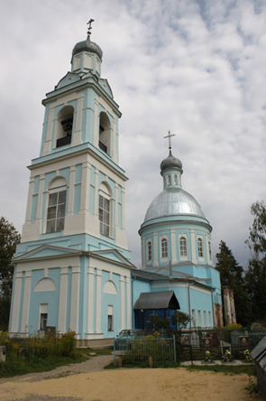

Располагается по адресу: Киржачский район, с. Федоровское, Борисоглебский погост.
Церковь здесь в первый раз отмечена в патриарших окладных книгах 1654 г. Вместо неё в 1810 г. начат каменный храм, постройка продолжалась 18 лет, он освящён в 1828 г. В 1848 г. тёплая трапеза расширена, и с того времени храм оставался в неизменном виде. Престолов в нём три: в холодном в честь Вознесения Господня, в тёплых приделах - Успения Божией Матери и Святых благоверных князей Бориса и Глеба. Церковь была достаточно снабжена утварью, ризницей, иконами и богослужебными книгами. В настоящее время (2007) церковь подновлена фасадами, закончена колокольня, покрыт основной объём.